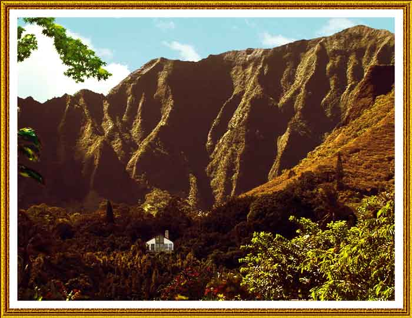

| Home, Kaneohe, Hawaii. Paintage. I added the sky, descending branch at the upper left (to balance the composition--note that two curves now point to the home), and the golden cast to a photo I took of our home. Behind the house is Haiku valley. The mountains are the Koolaus. On the other side of these mountains (really the eroded edge of a huge volcano crater) is Honolulu. The house faces Kaneohe Bay--that part of the crater collapsed into the ocean eons ago. |